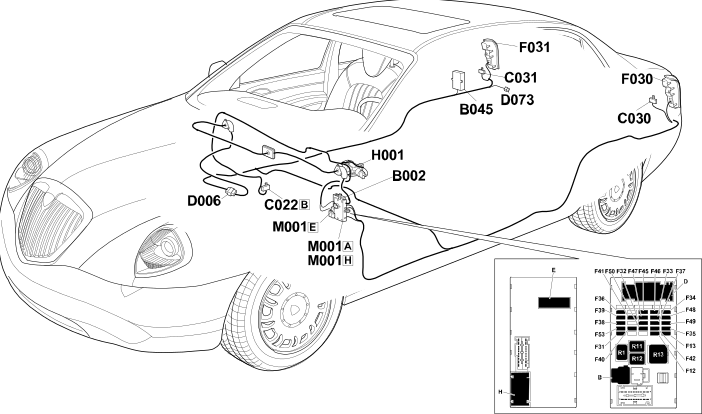

E2050 PREPARATION FOR TOWING LOCATION COMPONENTS
- Path
- Electrical equipment > ELECTRICAL FUNCTIONS > E20 INTERIOR LIGHTING > E2050 TRAILER WIRING > E2050 PREPARATION FOR TOWING LOCATION COMPONENTS
- Kind
- topic
- Applies to
- all engines; all production periods
- Interactive page
- https://sloeber94.github.io/elrnDB-lThss/en/#/841003627
Applies to: all engines; all production periods
Location Components

Components
Component code | Name | Assembly reference |
|---|---|---|
Junction unit under dashboard | - | |
Luggage compartment junction unit (CVB) | 5505A | |
Centre dashboard earth | - | |
Left rear earth | - | |
Right rear earth | - | |
Front/rear coupling | - | |
- | ||
Left rear light cluster | 5540A | |
Right rear light cluster | 5540A | |
Ignition switch | - | |
Body computer | - |
Topics linked from this page (11)
- B002 Junction unit under dashboard
- B045 Luggage compartment junction unit (CVB)
- C022 Centre dashboard earth
- C030 Left rear earth
- C031 Right rear earth
- D006 Front/rear coupling
- D073 Trailer preparation coupling
- F030 Left rear light cluster
- F031 Right rear light cluster
- H001 Ignition switch
- M001 Body computer